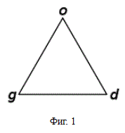
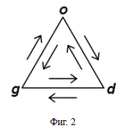
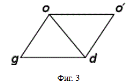

Беседа 2929 от 3877 · Беинса Дуно
Стани ти, който спиш!
Отче наш.
Имате ли тема зададена? – /Нямаме./
Пишете тогава: Най-малкият орган в човешкото тяло. Да поровите малко из анатомията, физиологията.

Та казвам: Сега, в дадения случай, този триъгълник представя едно динамично поле, в което действува човешкият ум, човешкото сърце, човешкото тяло. На мястото на човешкото сърце може да турим човешката воля, защото под думата „воля“ разбират това, което човек желае да постигне. Постиженията сърцето ги желае. Така се изразяват динамическите линии. Всичките линии, органическите линии, които са на човешкото тяло, всички са динамически. Те не са статически. Те са във вечна промяна. Нито една линия на вашите лица не е постоянна. Всичките линии постоянно се изменят. Това е естествено. Вие целокупно се изменяте. Ако вземете фотографиите на един човек от неговото детство до старини, ще видите, че той има многобройни променения.
Та казвам: Когато говорим за тялото, трябва да обърнем внимание на всички ония динамически линии, които спомагат за развитието на ума, които спомагат за развитието на човешкото сърце и които спомагат за правилното развитие на човешкия организъм. Защото, ако тия динамически линии не съществуват, тогава тялото не може да функционира. Динамическите линии са мозъчната система, нервната система – тя е вече динамична, през която се предават енергиите на мозъка, електричеството се предава. През симпатичната нервна система се предават чувствата. Има надлежни чувства, които са необходими за живота. Когато симпатичната нервна система е добре развита, тялото е в нормално състояние.
Сега много пъти вас ви са говорили за възпитание. Как ще се възпита един човек? Ако възпитаваш ума си, как ще възпитаваш ума си? Трябва да си имате един триъгълник. Защото тук както е този триъгълник, вие ще имате една илюзия. Линиите може да се сменят, този триъгълник е в постоянно движение. Ако вашето чело представя вашия ум, вие седите, да кажем, прави, челото ви е отвесно, но когато легнете на гърба си, в какво положение се намира челото? – Хоризонтално, според движението на земята, според орбитата на земята. Ние считаме равнината, в която земята се движи, за хоризонтална. Линията, образувана от центъра на слънцето, я считаме перпендикулярна. Когато човек легне в хоризонтално положение, той е успоредно с плоскостта, в която се движи земята, тогава какви ще бъдат резултатите? Когато човек се обезсърчи в живота, какво положение заема? Хоризонтално или перпендикулярно? Човек, който стои, никога не може да се обезсърчи. Ходиш, ти не можеш да се обезсърчиш. Щом паднеш, че не може да станеш, обезсърчиш се. Спънеш се някъде, паднеш, обезсърчиш се. Значи обезсърчението е едно състояние статическо. Динамическите сили на човешката воля не функционират, образува се едно статическо положение. Щом се обезсърчиш, то е едно статическо положение. Значи, станало някакво нарушение някъде. Сега, как трябва да се изправи това нарушение? Представете си, че вие сте ученик в гимназията. Представете си, че един ден учителят по математика, който е сприхав, казва: „От вас нищо няма да излезе. Ни от математика, ни от геометрия разбирате.“ Вие се обезсърчите. Питам: Какво е вашето състояние вече? – Вие сте паднали. С една дума, учителят като ви блъснал, вие сте паднали, казвате: „От мене нищо няма да стане.“ Щом сте паднали, какво трябва да стане сега? Вие сте музикант. Казали ви са само една дума: „Вие не разбирате нищо от музика.“ Ти се обезсърчиш. Какво е твоето положение тогава? Прав ли си? При всяко обезсърчение ти си в хоризонтално положение, в плоскостта на земята. И за да се насърчиш, трябва да заемеш перпендикулярно положение, да станеш. Щом човек се прегърбва, това са временни състояния. Те са лоши навици. Или някой като ходи, държи си лявото рамо вдигнато, дясното наведено.
Разправят за един анекдот в Америка. В една област имало един владика, който имал 400–500 души свещеници в своята област. Владиката ходил с вдигнато рамо и всичките свещеници му подражавали и те ходили с подигнато рамо като владиката.


Допуснете, че вие сте в училището. Някой път се оплаквате от учителя си. Казваме: „Еди кой си учител или професор ме е нарочил.“ Някой път учителят или професорът имат неразположение към някои ученици. Няма да обясняваме защо е така, но съществува неразположение на учители към ученици и обратното, съществува неразположение на ученици към учители. И то е вярно. Учителят не може да си обясни и учениците не могат да си обяснят. Нещо неприятно изпитват, каквото и да правят, имат едно отвращение. Ученикът трябва да разбира закона, да може да предразположи този учител, който няма добро разположение към него. Как ще го предразположи? Лесна работа. Пет пари струва церът. Онзи предмет, който преподава този учител, трябва да го обичаш. Като обичаш предмета му, вече този учител е разположен. Един учител, на когото учениците му обичат предмета му, той е разположен към тях. Ако учениците нямат разположение към предмета на учителя, тогава учителят няма вдъхновение да говори за предмета.
Сега, например, как да трябва да изучавате един предмет? Да вземем един по-образен предмет. Вземете рисуването. Отначало учителят не е разположен, но вие сте даровит, рисувате хубаво, вие ще обърнете внимание на учителя, той веднага ще се заинтересува от вас. Та казвам: Този закон ще го приложите. Природата всякога има разположение към всички ония, които имат добро разположение към предмета, който тя турила в училището. Същият закон е, няма изменение.
Та казвам сега: Статическото, материалното положение трябва да се изучава. Материята трябва да се изучава във всички нейни форми. Във всеки един триъгълник може да има кристализиране. Де има кристализация? – Кристализация имаме в минералогията. Какво представя кристализацията? Ако ви зададат един такъв въпрос, какво е било състоянието на земята, на слънчевата система, когато се е образувал кислородът, какво бихте отговорили? Или какво било състоянието на слънцето, когато се образувал азотът, или какво е било състоянието на слънцето, когато се е образувал водородът, или когато се е образувал въглеродът? Цяла една философия може да се създаде. При образуването на елементите слънцето де се е намирало? Когато се е образувал водородът, когато се е образувал кислородът, не е само това проявлението на кислорода, което сега имаме в такава форма. Най-първо нямало кислород, после се проявява и то е особено състояние. Азотът какво представя в химията, азотните съединения какво представят? Или кислородните съединения или въглеродните съединения какво представят в химията? Има една статическа химия, има една динамическа химия. Динамизъм в химията има. Има нещо разумно. Щом имате едно съединение, вие сте в лабораторията на един професор, който прави своите изследвания. Най-първо трябва да се запознаете с професора, после трябва да се запознаете с неговата област. В природата има химици, специалисти само по водорода. В природата има специалисти само по кислорода. Всичките елементи, които съществуват, търпят едно преобразувание. Да кажем, един въглероден атом или един кислороден атом, или един азотен атом, в неорганическото царство има едно състояние, в органическото царство има друго състояние. Ако един азотен атом мине през областта на ума или мине през областта на сърцето, на чувствата, той вече в себе си има тия качества, дето минал: Има качествата на човешкия ум и качествата на човешкото сърце, има и качествата на човешката воля, щом е минал през трите области.
Та казвам: Когато човек напуща земята, единственото нещо, което ще занесе със себе си, то са три атома. Като замине за другия свят, ще занесе три атома: Един атом, който носи неговите богатства на ума, един атом, който носи неговите богатства на сърцето и един атом, който носи неговите богатства на волята. Представете си какво ще бъде богатството му. Един атом го изчисляват на една 25 милионна част от милиметъра. Като разделите милиметъра на 25 милиона, че една част е един атом. Тия три атома ще бъдат богатството му, като влезе в другия свят. Какво ще правите с тях? В един атом има толкова много енергия, че може да движи земята за хиляда години. Толкоз много има скрита компресирана енергия, че може да движи земята за хиляда години. Значи, какви са били тия разумни същества, които са компресирали тази енергия в туй малкото количество? Сгнетена е тази енергия вътре. Това са теории за онези, които не разбирате. Сега аз тия неща ви ги навождам и вие няма да се ползувате. Ако един богат банкерин отвори своята каса и ви покаже златото си, всичките си милиони, вие ще си излезете с какво впечатление? – Че той е много богат човек. Пък и ако ви даде 200–300 златни монети за възпоменание, че сте идвали в неговата банка, или ако ви даде един прът злато около три сантиметра дебел за спомен, който тежи около един килограм за подарък. Човек, който има няколко милиарда, дава ви един килограм на вас. Той ви дава един килограм, само задето сте видели неговото злато, той ви плаща за усилието, дето сте гледали неговото богатство, един килограм злато. Колко струва? – 120 хиляди лева. Не си ли струва човек само да погледа богатствата на този (богат) човек? – Струва си. Някой път само да влезеш в богатствата на природата, само да погледаме, тя е много щедра, ще ни даде един подарък. Всеки, който е гледал нейните богатства, все ще му даде една пръчка. Като се върнеш, носиш богатство. Знанието, което придобиваме, то е богатство. Всякога, щом се занимаваш с природата, тя е много щедра, ще ти даде нещо. Щом не се занимаваш, нищо не ти дава. Дава се само от падналите неща, които нищо не струват. С тях се занимава.
Сега аз ви навождам тия примери, да ви покажа, че вие сте в един свят на възможности. Вие разглеждате живота в статическо положение. Казвате: „От мене нищо няма да стане.“ То е статическо положение. Ти не си автор, който можеш да кажеш какво ще излезе от тебе. Може ли да се произнесе една машина, един локомотив, какво ще излезе от нея? Тя трябва да върви, няма да мисли къде ще иде. Онзи, който кара, знае. Вие ще имате едно динамическо състояние, ще кажете: „От мене ще стане нещо.“ Какво ще стане? Ще стане нещо, нищо повече. Всяка машина е турена в действие, ще стане нещо от нея. Която не е турена на релсите, от нея нищо няма да стане. Но щом е турена на релсите, трябва да върви. Всеки човек, който е дошъл на земята, тъй, както е сега, ще вярва в онова разумното. Вашият ум има възможности за много големи придобивки. Сега вие какво разбирате под „придобивки“? Да кажем, някой е музикант, какви придобивки му трябват? Ако е цигулар, трябва му една хубава цигулка, един много хубав лък, корди, струни му трябват, трябва му после една хубава кутия за цигулката, трябват му и ноти, класически ноти, най-хубавите ноти. Трябва му и един добър учител. След като има цигулка, след като има лък, ноти и като дойде учителят, какво ще стане тогава? Четиримата като се съберат, вече имаме квадрата. Имаме цигулка, имаме лък, имаме ноти и учител – един квадрат има всичките възможности.
Та казвам: Вие сте в квадрата вътре. Изисква се от вас работа. Седите и казвате: „Какво трябва да правим?“ Ако не знаеш какво да правиш, иди да спиш. Ако не знаеш какво да правиш, иди да ходиш. Ако не знаеш какво да правиш, вземи цигулката си пък криво-ляво, горе-долу, започни да свириш. Най-първо всички се смеят наоколо. Аз съм виждал деца, които учат цигулка, да им казват: „Стига, гръмна ми главата.“ То дращи, дращи. Казват му: „Стига вече!“ Туй дете, което първоначално така дращи, после става виртуоз. Нищо не му казвай. Не му казвай: „Стига“, но му кажи: „Свири още.“ Сега някои от вас едва започвате да свирите. Всяка една мисъл, която не е турена на място, тя е като нота, която не е правилно взета. Всичките мисли са ноти на умствения свят. Всяка една мисъл трябва да се тури на място. Тогава има връзка в каква гама е мисълта. И мислите имат гами: Мажорни и миньорни. Казвам ви го това като теория, която е малко в разрез с установените работи. Но ако имаш една школа в живота, животът да е поставен нормално, знаеш какво щеше да бъде тук? Друга щеше да бъде работата. Каква е разликата между една машина, която се движи и една, която стои? Каква е разликата между едно дърво, което цъфнало и окапали цветовете, без да завържат плод и едно дърво, което завързало плод, и в края имате узрели плодове? Грамадна разлика има между дърветата, които имат плодове и които нямат никакви плодове. На едните ние обръщаме повече внимание, на плодовете. Следователно, умственият живот е една градина, в която мислите трябва да зреят. Ако аз ви кажа, че човешките мисли трябва да цъфнат и да узреят като плодовете, какво ще разберете? Една човешка мисъл трябва да цъфне и да узрее като един плод. И за една постъпка е същият закон. В природата има едно подобие между нещата. Една мисъл, която не може да цъфне, да узрее правилно, тя е мисъл, която не се е реализирала и не може да се реализира. Та затуй казвам: Вие сте градинари, имате три градини: една градина на вашите чувства, една градина на вашите мисли и една градина на вашето тяло. Следователно, три велики закона трябва да знаете, как да постъпвате. Законът за вашия ум ще бъде закон за мъдростта, закон за знанието. Светлината трябва да бъде един закон. При светлината вие ще знаете как може да се мисли. После вас ви трябва закона на любовта. Само при нейната топлина вие може да чувствувате. Там, дето има топлина, чувствата нормално се развиват и плодове може да има. Дето има светлина в умствения свят, плодове има. Дето има топлина в душата, плодове има. Имате най-после закона на истината, който означава физическия свят, свободата. Ние търсим свободата. Това е един начин, за да се реализират нещата. В туй състояние, в което сте, истината е онзи закон, по който може да се реализират нещата. Истината и надеждата са заедно свързани. Вярата и мъдростта пак са свързани. А любовта с какво е свързана? Любовта е свързана с духа. Човек, който има любов, той има дух в себе си. Любов, която не довежда човека до духа, тя е статическа любов. Любов, която го довежда до онзи първоначален източник, е любов. Под „любов“ разбираме онази област, от която всички неща произтичат. Това е Бог. Всичките възможности за постижения, това е любовта – Бог. Там всичко се постига. Без тази област нещата остават непостигнати. Казвам: Друга идея трябва да имаме, не само за Бога. В какво трябва да вярваме? Искаш да постигнеш нещо. Само в областта на любовта, която ще те доведе до Бога, ти може да постигнеш онова, което ти търсиш. Казвате: „Ние в тази работа загазихме.“ Не сте загазили, но вече с обикновените лодки не може да пътувате, те ще ни превърнат във водата. Ще оставим тия малките лодки, трябват ни големи кораби, на които да се качим. И благодарение, че ние сме в един кораб сега. Знаете ли какъв кораб е той? Той има 12 хиляди километра дължина. И този кораб не върви по права линия но той се върти около себе си, пък чудното е, че като се върти около себе си, не ни изхвърля из пространството, но и ние се въртим. Държи ни. Колко хиляди години взело на човека да се научи да се държи на земята, да не би да изхвръкне. Постоянно се държим за центъра. Ако не се държим за центъра, ще изхвръкнем. Често като умре човек, той не се държи за земята и отхвръква. Погледнеш, отива към слънцето. Иди го търси. Как ще го намериш? Тогава той се качва на друг, по-голям параход. Този, големият параход на слънцето, дето се качва, той има 800 хиляди километра дължина. Като се качим на слънцето, като погледнем на земята, тя е като една малка гемийка. Вие засега пътувате на един голям параход и трябва да се гордеете, параходът е голям, има 12 хиляди километра в диаметър. Гледам, че вие сте недоволни, екскурзианти. Вие излизате и се качвате на парахода. Забелязвам, че вие дълго спите в парахода. Излизате на палубата на този параход, когато е влажно или когато има буря, или сняг и пак лягате да спите. Ставате, пак времето не е хубаво. Вие се намирате в едно противоречие. Изменете начина на спането си. Как ще го измените? Ти не можеш да измениш начина на спането, ако ти нямаш любов. Ти не можеш да измениш начина на спането, ако ти нямаш светлина. Ти не можеш да измениш начина на спането, ако ти нямаш топлина. Три неща са необходими.
Аз говоря върху динамиката. Вземам любовта в динамична форма. Всичко, казват, в света е движение, но едно разумно движение. Динамическо движение, в което всякога има постижение. И в малките, и в големите разбирания има постижения. В малките разбирания има малки постижения, но всякога има постижения. Има неща, на които може да се радваш, колкото и малки да са. И в голямата площ на движение, и там има големи постижения. Сега вземете като предметно учение да изучавате първия триъгълник, който е турен на вашето лице. Да изучавате триъгълника. Защото имате една линия отдолу на носа, после има и други две страни. Носът показва как да давате и как да вземате. Аз като ви гледам, някои от вас знаете да давате, пък не знаете да вземате. Други знаете да вземате, пък не знаете да давате. Сега едновременно носът показва две състояния. Показва начина за правилното предаване на енергиите, правилно да приемаш и правилно да предаваш. Много пъти човек възприема, пък не дава, някой път дава, пък не възприема. Това е статическо положение. Носът показва мярката. Когато носът правилно се развива, тогава има тази светлина, всякога човек се намира в едно радостно състояние. Има нещо малко, което го радва. Радостта всякога показва, че човек правилно дава и възприема. То е радост, когато правилно даваш и правилно вземаш. Когато правилно не даваш и правилно не възприемаш, имаш малка скръб, неразположение. Казал си урока, но пишат две или три, малка бележка. Аз вземам бележка в природата, то е постижението. За бъдеще ще има училище, когато един ученик хубаво си каже урока, учителят ще му даде една хубава ябълка, това е 6. Ако издържи урока си много слабо, ще му даде една киселица. Щом му даде хубав плод, значи 6. След като излезе от училището, ще изяде тази ябълка и ще напише една тема върху ябълката. Той ще изяде шестте. Иначе, ако ви пишат шест, не може да го изядеш и ще напишеш върху ябълката известна тема. Като се върнеш при учителя, ще четеш своята тема върху ябълката, какво си написал. Вие ще се възпитавате. Не знаем как да живеем.
Ако вие сте един цигулар и идете на една сватба, какво ще свирите? Ще свирите песен за сватба. Ако сте цигулар и идете в църква при богомолците, ще свирите друга песен. На всяко място ще свирите подходяща песен. На сватбата ще свирите весела песен, то е физическият свят. В духовния свят това са вече линиите на човешкото сърце. Защото религията представя сърцето на човека. Ако идете в някой университет, какво трябва да свирите? За бъдеще, за този свят, за който ви говоря, професорите ще преподават музикално песента. Един предмет с пеене ще се преподава. Няма да се преподава, както аз ви говоря. Тук на земята е така, но в онзи музикален свят се преподава музикално. Ама не както в операта. Ще ви изгонят, ако така пеете. Трябва някой път да приготвя да ви дам пример, как да се преподава музикално.
Хубаво, да кажем, аз искам да ви говоря за Бога. Ще взема основния тон от мажорната гама „до“. От условията ще взема едно видоизменение. Ще взема „ре“, в движение с едно видоизменение. После ще взема „сол“. Имате „до, сол, ре“, музикално да ги предадете. „До“ е напрежение. „Сол“, вече нещата музикално се постигат. Сега, това е само едно сравнение. В операта те се мъчат да предават на музикален език разговор.
Всякога, ако вие искате да се самовъзпитавате, говорете си музикално на себе си. На ума си ако не говориш музикално, той не те разбира. На сърцето ако не говориш музикално, то не те разбира. На волята ако не говориш музикално, тя не те разбира. Като започнеш да им говориш музикално, разбират те. Казват така: „Ако знаеш да пееш, Господ има; ако не знаеш да пееш, няма Господ.“ Какво значи туй? Ако знаеш да пееш, идеята за Бога можеш да я предаваш. Ако не знаеш да пееш, идеята за Бога не можеш да я предаваш, безверник си. Аз тълкувам безверник, който обяснява нещата така правилно. Нещата са реални – кога? Щом изваждаш житото от хамбара и го посяваш на нивата, то е реалното, ще има жетва. Ако не посяваш житото на нивата, не го изваждаш от хамбара, на нивата растат бодили, нищо не е родила. Значи не знаем как да предаваме нещата. Значи житото останало в хамбара. Всякога, когато казват, че животът няма смисъл, ние сме оставили житото в хамбара. Онези чувства и онези постъпки ти трябва да ги туриш в динамическото поле да израстнат, за да видиш техния плод. Ако ги оставиш в хамбара, те ще останат такива, каквито са. Малко можеш да се ползуваш от тях. Тя е една идея за самовъзпитанието. Някой иска да се самовъзпитава. Много трудна работа е, ако човек не разбира. Ако разбира, не е трудна.
Запример, някои от вас туряте ръката на основата на носа. Какво искаш да кажеш? То е цяла наука. Той иска да си припомни нещо. Забравил нещо, като тури така ръката си, че дано да си припомни, какво беше. Спокойно се облегнеш, понеже лявата и дясната ръка са двата тока, в които разумните сили, които дават и вземат, се движат. През дясната ръка силите, които дават, излизат, през лявата ръка – силите, които възприемат. Имаш две ръце: Дясната дава, лявата възприема. Като туриш лявата ръка на носа, вземаш това, което дава. Тогава туряш лявата ръка на челото. Забравил си нещата, ти не си дал. Представи си, че ти си турил да извършиш една някоя работа, дадено ти е нещо да свършиш, но ти си го забравил. Седиш, задълбочил си се, като си припомниш, казваш: „Дойде ми на ума.“ Вземеш парите с дясната си ръка, свършиш си работите. Казвам: Защо имате две ръце и два крака? С левия крак каквото земята ви дава, вие го възприемате и го препращате нагоре. Едновременно човек така е поставен, тъй е положението, от земята приема и предава нагоре. Това положение: Лявата ръка нагоре, дясната надолу как ще го изтълкувате? В единия случай приемате от земята, предавате на слънцето. В другия случай приемате от слънцето и предавате на земята. Във всеки един момент вие трябва да се намирате в едно хармонично състояние, правилно да предавате енергиите на слънцето и правилно да предавате енергиите на земята. Туй трябва да се научи човек. Правилно да предава своите енергии спрямо земята. Ще мислиш, че земята е живо същество. Че имаш благодарност, че тя е била добра към тебе. Туй, което ти дава да го направиш, непременно трябва да го направиш. Понеже от слънцето идат всичките енергии, правилно ще ги възприемаш и правилно ще ги предаваш. Тази идея трябва да залегне в ума ти. Само при такова едно състояние вие може да мислите правилно. Ако мислите за земята обикновено и ако мислите за слънцето обикновено, ще имате една обикновена мисъл.
Я ми кажете сега, станахте ли по-учени? Колко да ви турим, три или шест? Аз вече имам ябълката. По новия метод по-хубаво е с ябълката.
Когато един човек е при един учен човек, да има едно състояние на възприемане. Като го пече слънцето, да мисли и много правилно да мисли. В него да има една благодарност, че всичко е хубаво, разумно. Този, ученият човек, като погледне реката, океана, вижда нещо грандиозно. Ученият човек накъде и да погледне, на камъка, дървото, плода, навсякъде ще намери нещо да му даде подтик на неговата мисъл. Ако знаеш къде да стъпиш, всичко в природата ще ти даде подтик. Като не намериш този подтик, объркваш се.
Първото нещо: Създайте си едно ново разположение. Обезсърчил си се. На гърба си. Кажеш си: „Стани, стани!“ Ти си кажи тъй: „Стани ти, който спиш!“ – Има такъв стих в Писанието. На себе си кажи си: „Стани ти, който спиш!“ Да кажем, тази сутрин вие като станахте, казахте: „Добър ден.“ Ти кажи: „Стани ти, който спиш. Нов ден има сега, стани ти, който спиш.“ – „Добър ден.“ Чуе, не чуе, ти ще му кажеш: „Стани ти, който спиш!“ Той ще стане и ще те пита: „Къде си ходил?“ – Ще му кажеш къде си ходил, какво си слушал. Той ще каже: „Такива работи вас ви приказват.“ И казва: „На нашето време не беше така.“ Значи, в човека има едно същество, което толкоз спало, преди хиляди години дето са му казвали, на която лекция заспало, като го събудиш, мисли за оная лекция, на която заспало.
Кои са сега най-важните работи?
Само светлият път на Мъдростта води към Истината.
В Истината е скрит животът!
Сега туй, което ви говорих, е само за вас. Не ходете да го разправяте никому отвън. – „Какво ви говориха?“ – Кажете само: „Стани ти, който спиш.“ Другото, след като го приложите в себе си, тогава го разправяйте. Тогава може да го кажете. Сега, ако идете да разправяте за тези триъгълници, те онези съвсем няма да разберат. Казвате: „Те са съвсем неприложими.“ Но практически може да ги приложите в себе си.
XVIII година.
7 лекция на Младежкия окултен клас,
държана от Учителя на 25 ноември 1938 г., петък, 5 ч. с.
София – Изгрев.